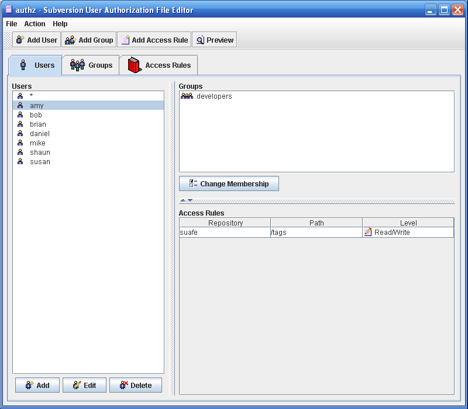
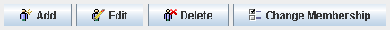

The Users Tab consists of three sections. The far left list displays all current defined users. The upper right section displays all groups of which the currently selected user is a member. The lower right section displays all access rules that reference the currently selected user. Selecting a different user automatically refreshes the two right sections.
Located above the list of groups are the user action buttons. Clicking on Add allows you to add another user. Clicking edit displays the edit screen for all currently selected users. Clicking delete deletes all currently selected users as well as all access rules that reference the user.
Double-clicking on a user in the user list displays the edit screen for the selected user. Double-clicking on a group name in the group list displays the group and group details in the Groups Tab.
Users created, but not referenced by any access rules or made a member of a group will not be persisted when the file is saved.